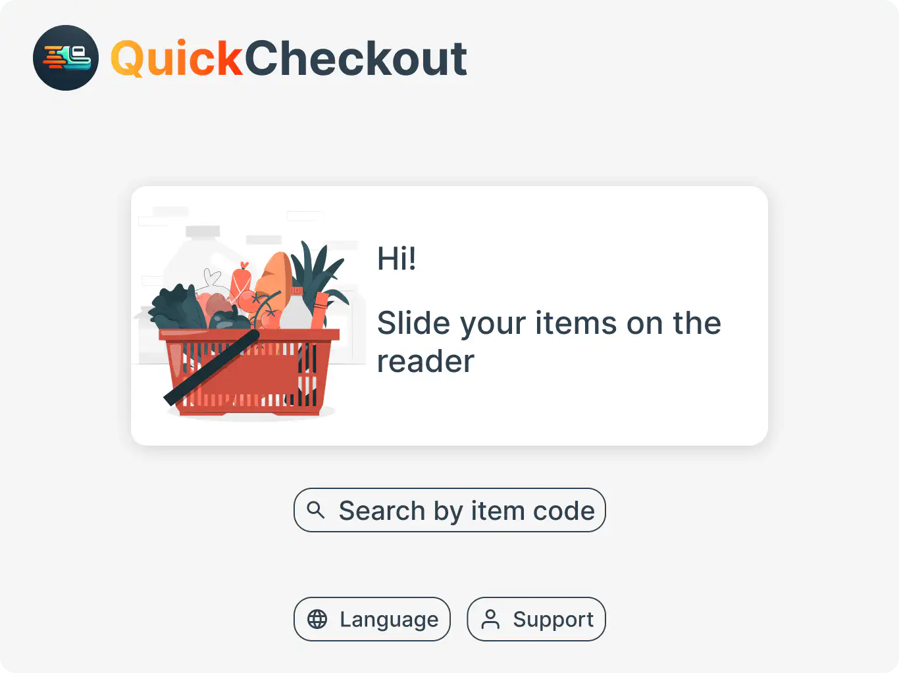
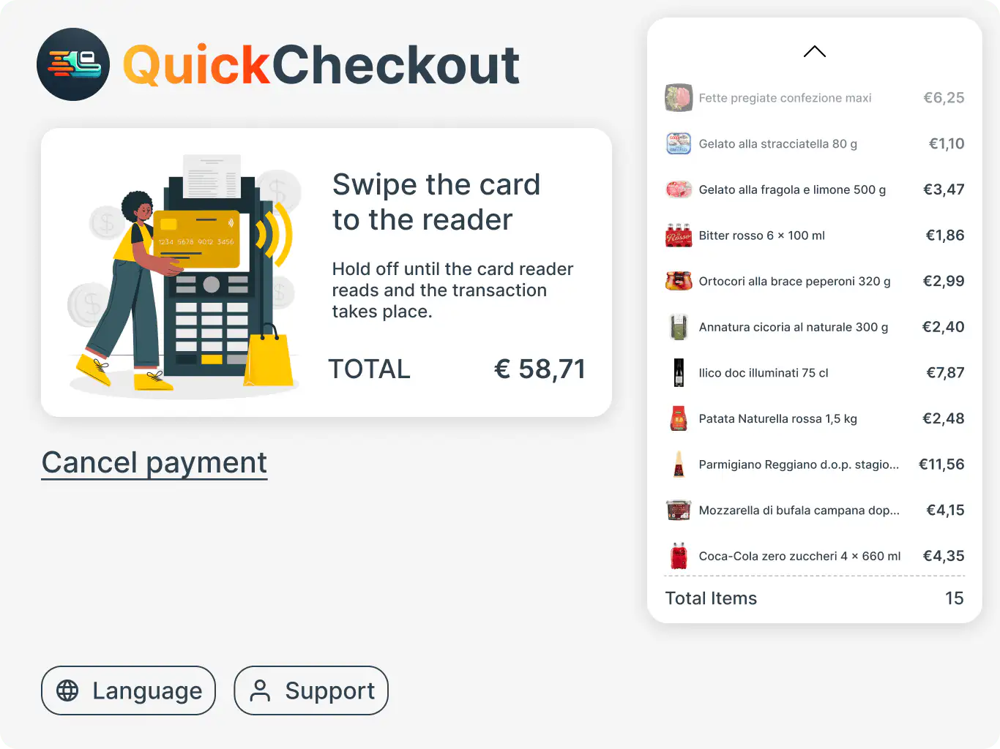
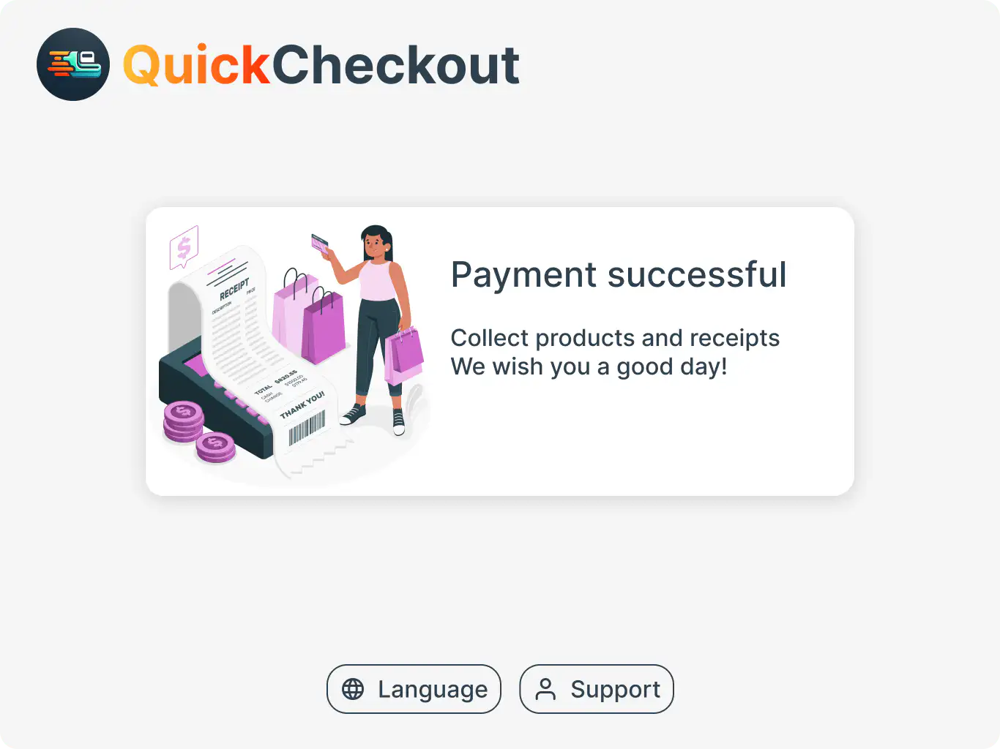

Personal Project · UX/UI · Kiosk · 2024
QuickCheckout
Self-checkout promises speed. Usually delivers frustration.
Supermarket self-checkout machines are everywhere — and almost universally disliked. As someone who has used them across Italy and the US, I kept encountering the same friction points: scanner errors with no recovery path, frozen screens with no context, unclear payment hierarchies, and error states that required staff intervention.
This personal project explores how a kiosk redesign could address those pain points through clear feedback, honest error recovery, and a payment flow that reflects how people actually pay — not how systems assume they do.
Tested in real supermarkets. Observed in two countries.
Research combined heuristic evaluation of self-checkout interfaces in Italian and American supermarkets, a survey on checkout experiences and payment preferences, and direct personal testing across multiple stores. The problems that surfaced were consistent regardless of brand or country — suggesting systemic design failures, not isolated bugs.
Every screen answers one question: what does the user need right now?
Clarity
Item illustrations + photo confirmation
Each scanned item displays its photo and name. Visual confirmation reduces mis-scans and gives users real-time confidence in what is in their cart.
Recovery
Errors with a next step
Every error state tells the user exactly what to do next. No dead ends, no waiting — the system guides recovery without requiring staff involvement.
Payment
Card-first, options visible
Payment method hierarchy reflects actual usage: card primary, then meal vouchers, then cash. Loyalty cards and coupons surface at the right moment — before payment, not after.
Accessibility
Kiosk-specific constraints
Large touch targets (minimum 44×44px, ideally larger for public screens), high contrast for bright retail environments, and clear error states that do not rely on colour alone. Every screen was designed with these constraints in mind.


Scan Error recovery Payment
In a real-world scenario, I would validate these designs with moderated usability testing in actual supermarket environments, A/B testing the error recovery flow against the current interface, and accessibility testing with users who have motor and visual impairments. I would also run card-sorting exercises to confirm the payment hierarchy reflects real user priorities.